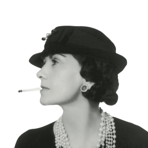
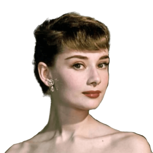
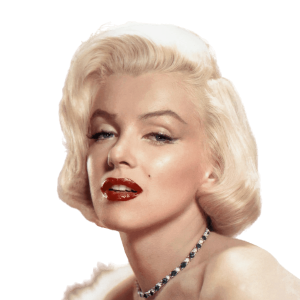

Fashion icons have long been a source of inspiration and influence in the fashion industry. Their unique sense of style and flair for fashion have captivated audiences around the world for decades. These icons have become symbols of timeless elegance and sophistication, setting the standard for what it means to be fashionable. From Grace Kelly to Princess Diana, their iconic looks have stood the test of time and continue to inspire designers and fashion enthusiasts today. Perhaps one of the most significant fashion icons of the 20th century was Coco Chanel. Chanel was a true pioneer in the fashion industry, creating a style that was both modern and timeless. She revolutionized women's fashion by introducing more comfortable clothing made from jersey fabric and creating the now-iconic Chanel suit. Her signature pearls and little black dress have become staples in every woman's wardrobe, proving that simplicity can be just as fashionable as elaborate designs. Audrey Hepburn is another iconic fashion figure whose style has become synonymous with elegance and sophistication. Her iconic looks in films such as Breakfast at Tiffany's and Sabrina have inspired generations of women to embrace a more classic, feminine style. She popularized the little black dress, and her elegant updos and oversized sunglasses have become iconic fashion statements. The impact of these fashion icons on the industry cannot be overstated. Their influence can be seen in everything from the clothes we wear to the way we accessorize our outfits. They have inspired designers to create new and innovative designs, pushing the boundaries of what is possible in fashion. Their styles have become timeless, and their legacy continues to shape the industry today. In conclusion, fashion icons are more than just stylish trendsetters; they are symbols of creativity, innovation, and style. Their influence can be felt in every aspect of the fashion industry, from haute couture to streetwear. Their impact is lasting, and their legacy continues to inspire designers and fashion enthusiasts around the world. Whether it's Coco Chanel's iconic suits or Audrey Hepburn's timeless elegance, these fashion icons have left an indelible mark on the industry and will continue to do so for generations to come.

Timothée Chalamet is a young and talented actor who has made a name for himself not only for his acting abilities but also for his unique and daring fashion sense. He has become a fashion icon in recent years, known for his ability to effortlessly pull off a range of styles and his willingness to take risks with his fashion choices. Chalamet's fashion sense can be described as youthful, eclectic, and unapologetically daring. He often mixes and matches different styles to create a unique and personal style that sets him apart from other actors in his age range. He is known for his love of bold prints, bright colors, and unexpected combinations. Whether on the red carpet or in his everyday life, Chalamet never fails to make a statement with his fashion choices. One of the defining features of Chalamet's fashion sense is his ability to wear traditionally feminine clothing and still look masculine and confident. He often wears oversized jackets, statement scarves, and patterned shirts that blur the lines between men's and women's clothing. He is not afraid to experiment with unconventional silhouettes and gender-bending styles, and this has made him a fashion icon and inspiration to many. Chalamet is also known for his love of statement accessories, particularly bold jewelry and eyewear. He often wears chunky rings, layered necklaces, and vintage-inspired sunglasses that add an extra element of personality and charm to his outfits. These accessories are often the key to completing his outfits and making them stand out from the rest. One of Chalamet's most memorable fashion moments was his appearance at the 2019 Golden Globe Awards, where he wore a custom-made black velvet Louis Vuitton harness over a crisp white shirt and black trousers. The bold and unexpected accessory sparked a lot of buzz in the fashion world and cemented Chalamet's reputation as a fearless and innovative fashion icon. Chalamet's fashion sense is a refreshing departure from the standard Hollywood red carpet fare. He is not afraid to take risks, experiment with unconventional styles, and push the boundaries of what is considered "masculine" or "feminine" in fashion. He continues to inspire others with his confident and adventurous approach to dressing, and his fashion choices have made him an icon and inspiration to many in the fashion industry and beyond. Overall, Chalamet's fashion sense is a reflection of his personality and individuality. He is not afraid to be himself and express his unique style, and this is what makes him such a standout figure in both the entertainment and fashion worlds. His fashion sense is an inspiration to many, and he continues to push the boundaries of what is possible in fashion with his bold and innovative approach.

Gigi Hadid is not just a supermodel, but also a fashion icon who has made a significant impact on the fashion industry. Her fashion sense is eclectic and versatile, and she is known for her ability to pull off any look with ease, whether it's a casual streetwear look or a glamorous red carpet gown. Hadid's style is all about mixing and matching different styles and textures. She has a unique ability to effortlessly combine high-end designer pieces with more casual items, creating outfits that are both chic and comfortable. She often incorporates bold and unexpected elements into her outfits, such as statement jackets, oversized jewelry, and colorful accessories. Hadid's fashion sense also reflects her love of streetwear. She is often seen wearing baggy hoodies, sneakers, and joggers, paired with high-end designer pieces and statement accessories. Her love of streetwear has made her a trendsetter in the fashion world, inspiring many to experiment with new and exciting ways to incorporate casual elements into their outfits. One of the defining features of Hadid's fashion sense is her ability to make even the most daring and unconventional outfits look effortlessly chic. She is not afraid to take risks with her fashion choices, often opting for bold prints, unexpected color combinations, and unique silhouettes. In addition to her love of statement accessories, Hadid is also known for her signature beauty looks. She often rocks natural makeup looks, emphasizing her natural beauty with subtle contouring and bold brows. Her hair is also a defining feature of her style, often styled in loose waves or slicked back into a chic ponytail. Hadid's fashion sense has made her a favorite among designers and fashion enthusiasts alike. She has walked the runway for some of the most prestigious brands in the industry, including Chanel, Versace, and Tommy Hilfiger. She has also graced the covers of numerous fashion magazines and has been the face of multiple campaigns for luxury brands. One of Hadid's most memorable fashion moments was her appearance at the 2015 Victoria's Secret Fashion Show, where she made her debut as a Victoria's Secret Angel. She wore a stunning pair of angel wings and a bedazzled lingerie set, showcasing her confident and stylish persona. Overall, Hadid's fashion sense is a true reflection of her individuality and personality. She is not afraid to take risks and experiment with different styles, and her ability to effortlessly mix and match different elements has made her a true fashion icon and inspiration to many.